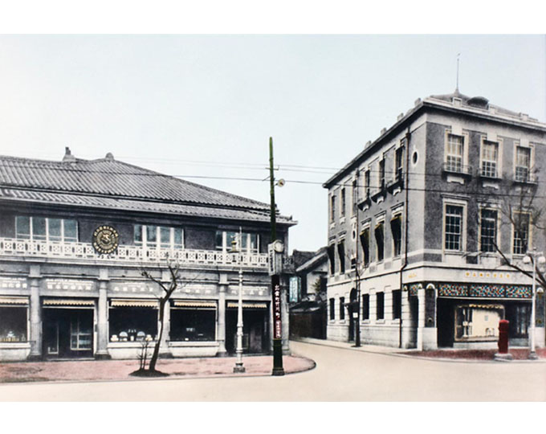
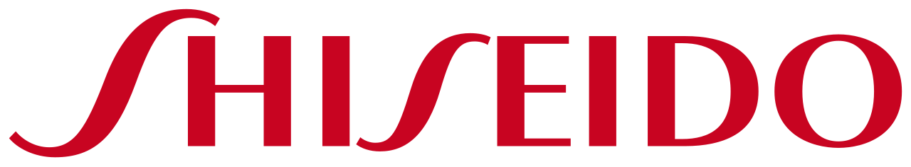
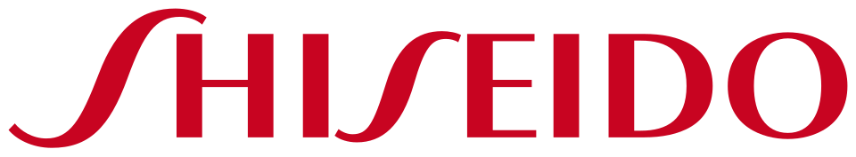

홈 > 브랜드 매거진 > 시세이도
시세이도
시세이도(Shiseido)는 1872년 창립된 일본의 종합 화장품 기업이다.
산업 분야 뷰티·퍼스널케어 · 공개 등급 자료 기반 · 브랜드 평가 4.3 ★


한눈에 보는 브랜드
시세이도는 1872년 후쿠하라 아리노부가 도쿄 긴자에 일본 최초의 서양식 약국으로 문을 연 뒤 화장품으로 전환한, 아시아를 대표하는 럭셔리 뷰티 기업이다. 150년이 넘는 역사를 지녔으며 일본 프레스티지 뷰티 1위, 세계 5위권 규모로 평가받는다.
일본·중국·아시아·미주·유럽과 면세(트래블 리테일)까지 아우르는 다지역 사업 구조를 갖췄고, 2024년 연매출은 약 1조 엔대 규모다.
브랜드 관점
에스티로더가 백화점·부티크 중심의 서구 프레스티지 정통성으로 글로벌을 장악하고, 아모레퍼시픽·설화수가 비슷한 혁신 화법에 더 낮은 가격대로 같은 아시아 소비자를 노린다면, 시세이도의 차별점은 동양 미학과 서양 피부과학을 결합한 J뷰티 정체성과 아시아·면세 채널의 높은 점유율이다. 끌레드뽀 보떼·나스·드렁크 엘리펀트로 가격·세대별 멀티브랜드를 구성해 프레스티지를 두텁게 쌓았다.
다만 약점도 명확하다. 2024년 중국 사업은 부진했고 후쿠시마 오염수 방류 여파의 일본 브랜드 불매까지 겹쳐, 면세 매출은 전년 대비 약 24% 급감했으며 연간 이익은 70%대 추락을 보였다.
면세·중국 의존이 실적 변동성을 키운다는 함의는, 한국 시장에서도 본토 회복과 따이궁 수요에 크게 좌우된다는 점으로 이어진다.
시작과 성장
창업자 후쿠하라 아리노부는 해군 약제관 출신 약사로, 1872년 도쿄 긴자에 임상과 조제를 분리한 일본 최초의 서양식 약국 시세이도를 열었다. 상호는 중국 고전 역경(주역)의 한 구절에서 따왔다.
1888년 분말이 아닌 고형 치약을 선보였고, 1897년에는 화장수 오이데르민을 출시하며 미용 영역으로 발을 넓혔다. 1916년 화장품부를 별도 사업으로 분리하고 매장을 열며 본격적인 화장품 기업으로 전환했다.
창업자의 아들이자 사진작가·예술가였던 후쿠하라 신조는 유럽에서 익힌 아르누보 감성을 담아 동백(하나츠바키) 심벌을 직접 디자인했다. 이후 끌레드뽀 보떼를 띄우고, 2000년 미국 나스, 2010년 베어 에센셜, 2019년 드렁크 엘리펀트를 인수하며 글로벌 멀티브랜드로 성장했고, 중국과 한국 등 아시아로 사업을 넓혔다.
브랜드 아이덴티티
시세이도의 가치관은 동양의 미의식과 서양의 과학적 피부 연구를 잇는 데 있으며, 미에 대한 약속을 상징하는 동백(하나츠바키) 로고가 그 정수다. 약국 시절의 매(독수리) 표식에서 화장품 전환과 함께 동백으로 바뀐 이 심벌은 처음 디자인된 모습이 거의 그대로 이어진다.
타깃은 자신을 정성껏 가꾸는 안목 높은 프레스티지 소비자이며, 브랜드 보이스는 절제된 우아함, 여백의 미, 장인적 디테일을 강조하는 정제된 톤이다. 긴자에서 출발한 세계적 품질이라는 자부심이 일관되게 흐른다.
제품과 서비스
대표 라인은 면역 개념을 담은 SHISEIDO 얼티뮨 세럼으로, 용량에 따라 대략 십만 원대 안팎이다. 최상위 끌레드뽀 보떼는 크림·세럼이 수십만 원을 호가하고, 메이크업은 미국 감성의 나스가 블러셔·립으로 수만 원대를 채운다.
여기에 향수와 선케어, 드렁크 엘리펀트 등 클린뷰티까지 포트폴리오가 넓다. 백화점·면세·자사몰·온라인 등 프레스티지 채널 중심으로 유통한다.
사람들
창업자: 후쿠하라 아리노부(Arinobu Fukuhara)가 1872년 창업했다. 소유: 독립 상장사(시세이도 컴퍼니, 도쿄증권거래소 4911).
현재 상태
본사는 도쿄도 미나토구 시오도메에 있다. 2025년 1월 1일자로 후지와라 켄타로가 대표이사 회장 겸 최고경영자에 올랐고, 한국 법인 시세이도 코리아는 같은 시점 양근혜 대표를 첫 여성 수장으로 선임했다.
2024년 지역별 매출은 일본이 가장 컸고 중국이 그 뒤를 이었으며, 면세는 두 자릿수 감소로 부진했다. 가장 최근 회계연도 이후의 세부 실적은 미공개다.
타임라인
BI/CI 변천사

대표 로고대표 브랜드 마크함께 읽을 브랜드
 뷰티·퍼스널케어 · 자료 기반아모레퍼시픽
뷰티·퍼스널케어 · 자료 기반아모레퍼시픽아모레퍼시픽(Amorepacific)은 1945년 서성환이 태평양화학공업사로 창업한 한국의 대표 뷰티 기업으로, 2002년 현 사명을 채택했다. 설화수·라네즈·이니스...
 뷰티·퍼스널케어 · 자료 기반설화수
뷰티·퍼스널케어 · 자료 기반설화수설화수(Sulwhasoo)는 아모레퍼시픽이 1997년 론칭한 대한민국의 한방 럭셔리 스킨케어 브랜드다. 한방 원료와 프리미엄 포지셔닝으로 아모레퍼시픽을 대표하는 럭셔...
 뷰티·퍼스널케어 · 자료 기반LG생활건강
뷰티·퍼스널케어 · 자료 기반LG생활건강LG생활건강(LG H&H Co., Ltd.)은 화장품·생활용품·음료를 아우르는 한국 기업으로, 현 법인은 2001년 LG화학에서 분할 신설됐다.
 뷰티·퍼스널케어 · 자료 기반코스맥스
뷰티·퍼스널케어 · 자료 기반코스맥스코스맥스(COSMAX)는 1992년 설립된 한국의 화장품 ODM 기업으로, 세계 1위 화장품 ODM 제조사로 꼽힌다.
 뷰티·퍼스널케어 · 자료 기반미샤
뷰티·퍼스널케어 · 자료 기반미샤미샤(MISSHA)는 에이블씨엔씨가 운영하는 한국의 로드숍 화장품 브랜드로, 2000년 온라인 브랜드로 시작됐다.
 뷰티·퍼스널케어 · 자료 기반헤라
뷰티·퍼스널케어 · 자료 기반헤라헤라(HERA)는 아모레퍼시픽의 프리미엄 화장품 브랜드로, 1995년 론칭했다.
 뷰티·퍼스널케어 · 자료 기반에스티 로더
뷰티·퍼스널케어 · 자료 기반에스티 로더에스티 로더(Estée Lauder)는 1946년 미국에서 창립된 프레스티지 화장품 브랜드이자 글로벌 뷰티 그룹이다.
 뷰티·퍼스널케어 · 자료 기반달바
뷰티·퍼스널케어 · 자료 기반달바달바(d'Alba)는 달바글로벌이 전개하는 대한민국의 프리미엄 비건 스킨케어 브랜드다. 2016년 론칭했으며 화이트 트러플 성분의 미스트 세럼으로 글로벌 베스트셀러를...